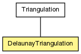

voronoi
Class DelaunayTriangulation
java.lang.Object
 voronoi.Triangulation
voronoi.DelaunayTriangulation
voronoi.Triangulation
voronoi.DelaunayTriangulation
public class DelaunayTriangulation
- extends Triangulation

A 2D Delaunay Triangulation (DT) with incremental site insertion.
This is not the fastest way to build a DT, but it's a reasonable way
to build the DT incrementally and it makes a nice interactive display.
There are several O(n log n) methods, but they require that either (1)
the sites are all known initially or (2) the sites are inserted in random
order.
| Field Summary |
boolean |
debug
|
| Method Summary |
java.util.Set |
delaunayPlace(Pnt site)
Place a new point site into the DT. |
Simplex |
locate(Pnt point)
Locate the triangle with point (a Pnt) inside (or on) it. |
| Methods inherited from class java.lang.Object |
equals, getClass, hashCode, notify, notifyAll, wait, wait, wait |
debug
public boolean debug
DelaunayTriangulation
public DelaunayTriangulation(Simplex triangle)
- Constructor.
All sites must fall within the initial triangle.
- Parameters:
triangle - the initial triangle
locate
public Simplex locate(Pnt point)
- Locate the triangle with point (a Pnt) inside (or on) it.
- Parameters:
point - the Pnt to locate
- Returns:
- triangle (Simplex) that holds the point; null if no such triangle
delaunayPlace
public java.util.Set delaunayPlace(Pnt site)
- Place a new point site into the DT.
- Parameters:
site - the new Pnt
- Returns:
- set of all new triangles created